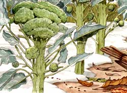
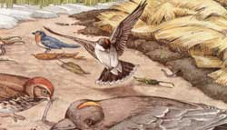
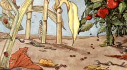
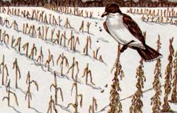
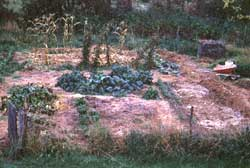
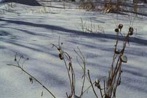
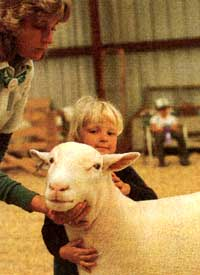
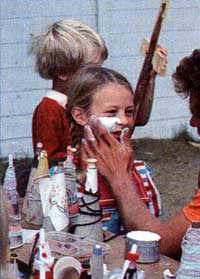
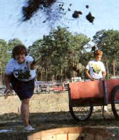
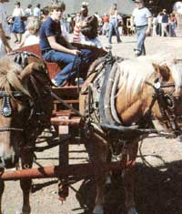

Mort Mather cuts through the false folklore of late-season garden chores and makes a compelling case for doing... nothing?
September and October are the most beautiful months in Maine. The air is clear and crisp. The garden is overflowing with its bounty. Corn on the cob roasted on the grill in the husk is a favorite. We strip back the husk and use it as a handle, buttering the corn by rubbing it across a stick of butter. We frequently eat it as an hors d'oeuvre outside before the rest of the meal. When we finish an ear we throw it in a high arc toward the compost bin, cheering if it hits the target.
Salads are the best ever with vineripened tomatoes, cucumbers, fresh lettuce, maybe green peppers and onions or scallions. Or maybe we will have a platter of thickly sliced blood-red tomatoes with fresh basil chopped and sprinkled over them or cucumbers and onions swimming in vinegar and water and flavored with a little fresh dill.
The main course might be kabobs with summer squash, onions, pepper, green or pink cherry tomatoes, and some red meat. Then again we might grill some fish or chicken along with zucchini, whole onions, and potatoes.
Sometimes I feel like a bear trying to eat enough to get through the winter. It is clear these evenings that winter is the next season. The first frost is the most unmistakable indication. The first frost leaves a large portion of the garden covered with a network of dead vines. The tomato patch is a tangle of dead plants and squishy tomatoes.
With the first frost to be followed in a couple of months by frozen ground, we basically have three options: We can clear away all the crop residue and/or till the soil. We can cover the garden with something to protect it from the elements. Or we can do nothing, leaving the garden as it is at the end of the growing season.
Good Bug Advice Gone Bad
Clearing away the plant residue and tilling the soil is the most often recommended end-of-season treatment of a garden. You've heard such advice from near and far. The reason for this is that some insects that can damage crops might be disturbed and perhaps destroyed in the process. The moths that give birth to cutworms lay eggs on grass stems in the fall, and the grubs winter over in the soil. No grass stems in the garden, no cutworms.
Corn borers winter over in the stalks of corn and in some weed stems. Get rid of the winter harbor of the corn borer and you get rid of the corn borer. Colorado potato beetles winter over in the soil. Till the soil and you expose the beetles, where they may get eaten.
That is all well and good but what about the grass stems growing around the garden? What about the corn stalks in someone else's garden or field? What about the weeds along the roadside that can be an alternative wintering spot for corn borers? What about the Colorado potato beetles that wintered over under the deadly nightshade or in a garden several miles away? All of these insects fly at some stage in their life cycle. The Colorado potato beetle was tracked at about 20 miles a year as it moved across the country from Colorado.
Well, I look upon the garden as a living entity. It is many living things, the insects just mentioned being a small part of this community of life. The insects that call attention to themselves in our gardens because they eat the same things we want to eat are actually in the minority.
Cynthia Westcott, in The Gardener's Bug Book (Doubleday), reports an estimate of about 10 percent of all insects as potential problems to agriculture. Most are benign and a few are decidedly beneficial, most notably lady bugs. Considering that ratio, wouldn't it make more sense to treat the garden as a residence of good life? When we pull the plants and till to disturb the habitat for some of the insects that feed on garden crops, aren't we also disturbing the habitat for many of the insects that are not a problem? I argue that the benign insects are actually beneficial. Many are converting organic materials to plant nutrients.
Each one of them becomes fertilizer when it dies. What organic gardener can help but smile when watching a flycatcher like the eastern kingbird fill up on flying insects from a perch on the bean pole and then convert dinner into fertilizer neatly deposited at the base of the pole, where rain will take the nutrients thus gathered down to the root zone? When I look at my garden as a living community
I see a community that is in balance, everybody going about their job: the earthworms working at aerating and fertilizing the soil; billions of microorganisms working symbiotically with the plant roots, binding loose soil together and breaking tight soil apart, decomposing organic matter into nutrients, and doing jobs that we may not even understand; 90 percent of the insects in the garden doing who-knows-what in that complex community; and the plants themselves sending roots deep and bringing minerals to the surface, spreading their roots to hold the soil in place, providing good living conditions for other creatures. How can I think of churning that all up just before the ground freezes? It seems to me that would be devastating to that wonderful community.
Think about a tornado or hurricane devastating your town just before the onset of winter. A cruel trick, wouldn't you say? That isn't the only reason I rule out cleaning and tilling the garden in the fall. If you clear the corn stalks out of the garden, you are removing a considerable amount of organic material. Seems kinda silly to me to cart organic material away from the garden in the fall and then haul in some other organic material in the spring. I could, as I have done in past years, compost the corn stalks. If I get the compost pile hot enough it will kill any insects. I'm not the best composter in the world so I seldom get the pile really cooking.
I have found corn stalks hanging around in the compost pile not completely decomposed when I'm looking for some nice potting material. I have decided that the best place for the corn stalks is right where they grew. They took something from the soil during the growing season. Why not leave them where they grew so they can replace much of what they removed? So how is it that I leave the corn stalks in the garden over winter and through the spring until they either get turned under the soil or covered with mulch and yet have no trouble with corn borers? I've been doing it for too many years for it to be just luck.
I think the reason is that I make sure the corn has a healthy soil in which to grow. I think it is because insects that eat plants prefer unhealthy plants to healthy ones. That is certainly the case with insects' taste in animals. "Bugs and people have dissimilar appetites, as can be seen elsewhere on the homestead. It is the weak, underfed, rough-coated calves-and not the suckling, fat, smooth-coated ones-that are eaten up with lice.
A weak, sickly hen in the flock will always carry most of the lice. Trees weakened by drought, leaky gas mains, or loss of roots due to excavation are more heavily attacked by borers than nearby healthy trees of the same kind. Cinch bugs tend to collect and breed more heavily on corn or wheat up on an eroded slope rather than down at the foot of the slope where eroded soil minerals and organic matter pile up to enrich the soil."
(Organic Plant Protection, edited by Roger B. Yepsen, Jr., Rodale Press) Someone visiting my garden once asked if I could show them what a Colorado potato beetle looked like. I was having a better-than-usual year with the potato bugs so I wasn't sure I could show her what they looked like. I looked down the row and saw one plant that was smaller than the others. It was struggling. Believing that to be the most likely plant to have collected potato beetles, I went to it and, sure enough, on the undersides of the leaves there were three yellow egg clusters that would soon hatch into those brick-red grubs potato growers know so well. After she left I checked all of the plants and found only three or four additional egg clusters.
I read a study, I believe at the University of Missouri, in which corn was grown in adjacent plots with various nutrient imbalances. Corn borers attacked the plants with the unbalanced diets and for the most part left alone the plants that were properly nourished. My approach to insect damage is that the insects are trying to tell me something. If a crop is destroyed, I figure the insects are protecting me from eating an inferior food. I try to figure out why the plant was stressed and thus attractive to insects. This philosophy is difficult for some to embrace. All I can tell you is that it has been my guide for over 20 years of gardening and I have never felt that it led me in the wrong direction. As far as preparing the garden for the winter then, I am simply not concerned with any insect pests that may find winter cover in my garden. I have yet another reason for not cleaning up and tilling the garden in the fall. Not only is the soil life left exposed but the soil itself is made vulnerable.
Bare soil will be splashed by rain drops and blown by the wind. If it is on a slope, heavy rains or the spring thaw may cause it to erode.
Cover Crops
If you are heavily into neatness or if there is a pest in the garden whose cycle you really want to break, you can till and plant a cover crop. The only winter cover crop I have used is winter rye. This should be planted pretty soon after the first frost so it can start growing before the ground freezes. It germinates in cool soil and will put out enough roots to hold the soil. The root system will provide a home for some of the soil life.
The grass cover will also protect the surface of the soil. Winter rye will get growing again early in the spring, before the ground is dry enough to work. All of this growth should be turned into the soil where it will act as a green manure. I especially like using winter rye when preparing new ground. In this case I want to disturb the soil community, especially the plant community.
There are also some insects that reside in sod that I would rather not have hanging around in my garden. Wireworms are the most notable. They don't cause a lot of damage but they will work their way into potatoes. Wireworms are rare in a mature garden. By tilling sod in the fall and planting winter rye, you weaken the grasses and weeds that are growing there just as winter is coming on. The rye you plant is given the advantage. It will come on like gangbusters in the spring, choking out just about everything else.
Then when you till in the rye, it will stay tilled in. You won't find it cropping up where you don't want it. There is one problem with planting winter rye in the garden after the first frost. Not everything in the garden is killed by frost. Brussels sprouts, broccoli, cabbage, lettuce, and kale are crops we want to keep growing as long as possible. When they are gone our fresh green vegetables are gone until next spring. We get lettuce from the garden until Thanksgiving if we plan our planting properly. Kale, if you can keep the deer away from it, can be harvested from beneath the snow. Parsnips will stay in the ground all winter for early spring harvest.
Carrots can be kept in the garden if covered with enough mulch. I put whole bales right over the row just before the ground freezes. These hardy plants are going to be in the way of neatening up the whole garden by tilling and planting a cover crop. One solution is to make sure you plan the garden so that these crops are grouped together. Then you can leave this section while planting a cover crop over the rest of the garden. What to do with the area that didn't get the cover crop? You can give it the top-of-the-line treatment. As crops vacate their garden space you can spread some manure and then cover the manure with a mulch of hay or straw. The mulch will hold in the nutrients and protect the soil from the weather. The soil microorganisms will love you for providing for and protecting their community.
The plants you plant here next year will also love you. Whenever I mention that I mulch with hay, someone inevitably asks, "How do you get hay without bringing in weed seeds?" Good question. I don't. When I bring in hay I bring in thousands of weed seeds. I spread the weed seeds all over my garden every year. The garden loves the weeds, the seeds, the hay, and anything else organic that I bring into it. I am no more concerned with weed seeds in my garden than I am with insects. My garden is a happy place where all are welcome. "Welcome" may not be quite accurate. I just don't think it is realistic to believe that any of us can keep weed seeds or insects out of our gardens.
I have learned how to live with them. Insect pests are not attracted to healthy plants, so they do not arrive in worrisome numbers. The weeds are easily kept in check by cultivation and mulch so that they usually end up being fertilizer.
Well ...I Do Almost Nothing
If anyone has wondered if I am a lazy gardener, this should erase any doubts. My preferred method of preparing the garden for winter is to do nothing. But there are a few jobs that even a lazy gardener should do. First, I have to clear out any unnatural things that I used during the growing season. The pea fence and poles should have been removed in July when the peas stopped producing. The poles for the pole beans should also have been put away.
I guess that I am admitting that these chores don't always get done until fall. If the tomatoes were grown on poles or stakes or in wire baskets, these need to be put away. The best way to get a plastic mulch out of the garden is to cut off the plants that were growing in it. Don't pull them as it messes up the plastic which may be tender from the summer sun. With the plants gone it is much easier to get all of the plastic out of the garden. Another advantage of cutting the plants off is that the roots remain in the ground where they provide habitat for soil organisms and help hold the soil together over winter. They also provide channels for surface water to penetrate a tight soil. The soil under the plastic mulch is vulnerable to erosion so I like to cover it up.
It only takes a few minutes to spread some manure or compost over it and cover it with mulch. As I look at the fall garden, much is already covered with mulch. Usually the corn, tomato, cucumber, and squash patches are in good shape. I usually mulch the potatoes too, but when I harvest them I disrupt the mulch and the soil. The easiest way to fix that is to put the mulch that was there right back.
Weeds have been allowed to grow in the plots that were not mulched. If you think you would like to be a lazy gardener, you should study the previous sentence carefully. Some people may look at the weeds and think that you have been lax in tending your garden. It is then that you need to be able to tell them that you have let the weeds grow on purpose. (If you can't think of a good reason to back up what is happening in your garden without you, tell people it is an experiment.)
There may be other unmulched areas in my garden but you can count on the lettuce and cabbage plots being unmulched. Slugs love the moist interiors of lettuce and cabbage but they hate dry soil. I have found the best way to keep slugs out of these two crops is to cultivate around them. Slugs don't do much damage but they sure are off-putting in the kitchen. Most of my cultivation and weeding is done in the spring. There are better things to do during the dog days of summer than chase weeds. July, August, and September are harvesting and eating months. I may pull a few weeds while harvesting but the garden in late summer usually has a fairly decent crop of mature weeds. I get rid of any that are going to compete with my crops. The rest are filling in spaces that I don't need. Some are low-growing, so they're good ground cover. Others are tall.
These have a special use in the winter garden. There is a field to the west of my garden, which means that a lot of wind blows across it. Anything sticking up in the garden tends to slow the wind. In the fall the wind sometimes carries leaves, which get caught in the weeds. Free mulch delivered and spread. When the winter wind carries snow with it, the slowing of the wind causes the snow to drop out and cover the garden. Several years ago I planted a row of shrubs 20 feet west of the garden to act as a snow fence. Snow has been called the poor man's fertilizer. Since snow has no more nutritive value than rain does, it is difficult to see how it fertilizes. I suspect it got the reputation for being good for farmers because they found that the years after a snow-covered winter were better growing years than when the ground was exposed all winter. My guess is that the snow protected the soil from the elements and from freezing and thawing. The living community in the soil was able to be more active under the snow and this activity produced more soil nutrients.
At any rate, I love to see the garden covered by snow all winter, as was the case last winter. There was snow on the garden from late December until late May. This snow cover kept the ground from freezing more than an inch deep. Considering that frost can go as deep as four feet in this area, that was a remarkable difference. In northern climates there is one winterizing job to be done after the ground freezes if you are growing strawberries. Strawberry plants have fairly brittle roots which can be broken by freezing and thawing of the soil. Wait until the first freeze before you insulate the ground so that it will likely not thaw.
As the cold intensifies during the winter the ground may freeze more deeply but it will be spared wide fluctuations in temperature. There are two reasons for mulching after the first frost. If the mulch is put on too soon, it may generate enough warmth to stimulate the plants to start a new growth cycle-an unkind trick at this time of year. The other reason is rodents. If field mice or other rodents move in under the mulch, they will cause damage to the plants.
Other annuals can benefit from mulch in cold climates. The mulch acts as insulation when Mother Nature neglects to provide snow. If you mulch fruit trees, protect the trunk with wire mesh or some other barrier so rodents can't eat the bark. If they girdle a tree, it will die. When someone asks what I do to the garden in fall, I am likely to say, "Nothing" Picking up after myself and spreading manure and mulch on the small patch where the plastic had been; that's about it. And yet I feel the garden is nicely protected. Much of it is covered with manure and mulch, spread in the spring. What isn't covered with mulch is covered with a green manure crop-weeds and other plant residue.
The soil life has been left undisturbed so it is in the best possible shape to weather whatever winter brings. And, through careful planning, the garden will collect more than its share of nature's mulch-leaves and snow.
A New Contest at the Common Ground
The first frost usually happens about the third weekend of September in my garden. If I haven't gotten all the tomatoes, cucumbers, and the like harvested before I head off to the Common Ground Country Fair in Windsor, Maine, I usually regret it. The Common Ground Fair, by the way, is the best fair ever. No midway or carnival rides. No sugar, white flour, or caffeine but lots of really great food.
It is sponsored by the Maine Organic Farmers and Gardeners Association and must be in its twentieth year, considering the age of our son and the age he was the first year of the fair.
Rather than watching horses or oxen straining to pull heavy loads you can watch work animals doing real work like twitching logs or pulling a wagon. The sheep dog demonstrations are always a treat. You can see cider being made, follow wool from sheep to sweater, and watch boats and houses being built. You can learn about solar energy and wood heat. And there is entertainment in the form of wandering and stationary minstrels, various dancers, and children's parades. Plus, there are endless demonstrations of everything from compost making to horse shoeing. It is a homesteader's paradise.
It is also the site of the Annual Harry S. Truman Manure Pitching Contest. I take pride in being the creator of this splendid event. The idea was born while spreading manure over an acre from the back of my pickup truck. When spreading manure this way the first task is to position the truck so you can reach the maximum amount of garden space, propelling the contents of the truck with a pitch fork, manure fork or shovel. The implement depends on the density and weight of the manure and its ability to hold together. The ideal for spreading is dry horse manure with lots of shavings. You can use a big coal shovel and really fan the shovelful beautifully, covering a large area. However, when you have covered as much of the area around the truck as possible in that manner, you would like to have a long-handled pitchfork and some wet cow manure with lots of hay and straw in it to hold together in a package for air delivery to a far corner. While thus employed (an acre took about 20 loads as I recall) I would provide a sports commentary to my activities.
"Gee, Howard, that was a beautiful fan. He twisted his right wrist while swinging his body, which caused the manure to fan out evenly. He must have covered about 30 square feet with that one."
"Yes, it was a beauty, Don, and did you notice how he has the truck positioned three yards closer to the upwind side of the plot to take advantage of the wind?"
"I did, Howard. The wind is going to be a factor here today with the lighter manures, don't you think?"
"This may be won or lost on how well they can pitch into the wind."
Then I started thinking about how to make it a real contest with real commentators. Having a bit of Tom Sawyer in me, I thought, why not have regional competitions with the winners of the regionals going to the final at Common Ground. The first regional was held, you guessed it, in my field.
I devised four contests. Distance and accuracy, where a fork- or shovelful of manure is tossed as far down a line as possible with the distance from the line subtracted from the distance down the line. The basket pitch is for accuracy. A bushel basket of manure is weighed and then dumped in a wheelbarrow. The contestants pitch the manure back into the basket which is placed 10 feet away. The basket is weighed again and the person getting the most manure back into the basket is the winner. In the gardener's spread, the contestant spreads a wheelbarrow load of manure evenly over a measured plot. The farmer's spread is basically the same except it is a truck load of manure and the plot is much larger. Both the farmer's and gardener's spread were judged for evenness, neatness, and speed. Needless to say, I was most interested in the farmer's spread.
The fact is, it was a whole lot more work putting the event together than it would have been to spread the manure myself. The real payoff came for me at the farmer's spread at Common Ground the first year. Rounding up 20 trucks and getting them filled with manure was a logistical nightmare, but when the head judge shouted through the bullhorn, "Gentlemen, place your trucks," I got goose bumps.
I had disqualified myself from the contest so I was just watching and commenting, of course. The plots were too large to do the whole job from one spot. When all the trucks were placed just where the contestants wanted them and the contestants were poised in the back with their favorite implement in hand the starter's gun was fired.
What a glorious sight! Manure went flying in every direction from the backs of 20 trucks. I will probably never see the opening celebration of the Olympic Games live, which I'm sure is more impressive, but this will do in my memory.
Why is it named in honor of President Truman? A society lady in Washington once asked Mrs. Truman if she could get her husband to stop using the word "manure" in polite society. Bess replied that it had taken her some time to get him to use the word "manure."
All photos are of the Maine Organic Farmers and Gardeners Association's Common Ground Country Fair. (See Image Gallery)
|
 In this photo, frost has wiped out our tender crops. The wheelbarrow at the far right is loaded with manure which is to be spread over bare ground and covered with hay mulch to hold nutrients and protect the soil. |
 Sunflowers in the foreground; weeds beyond were left to catch blowing snow. |
 |
|
 |
 |
 |
|
 |
 |
 |
|
 |
|
|